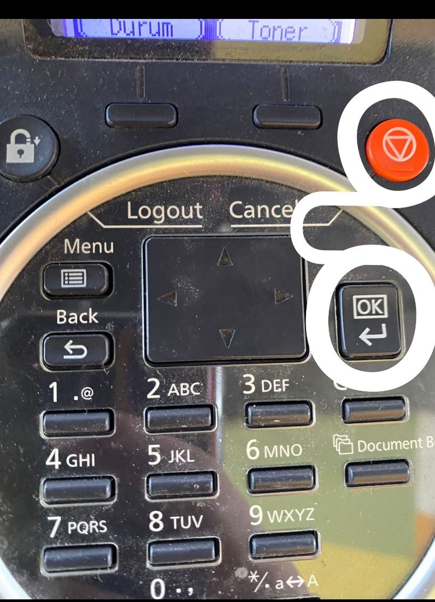
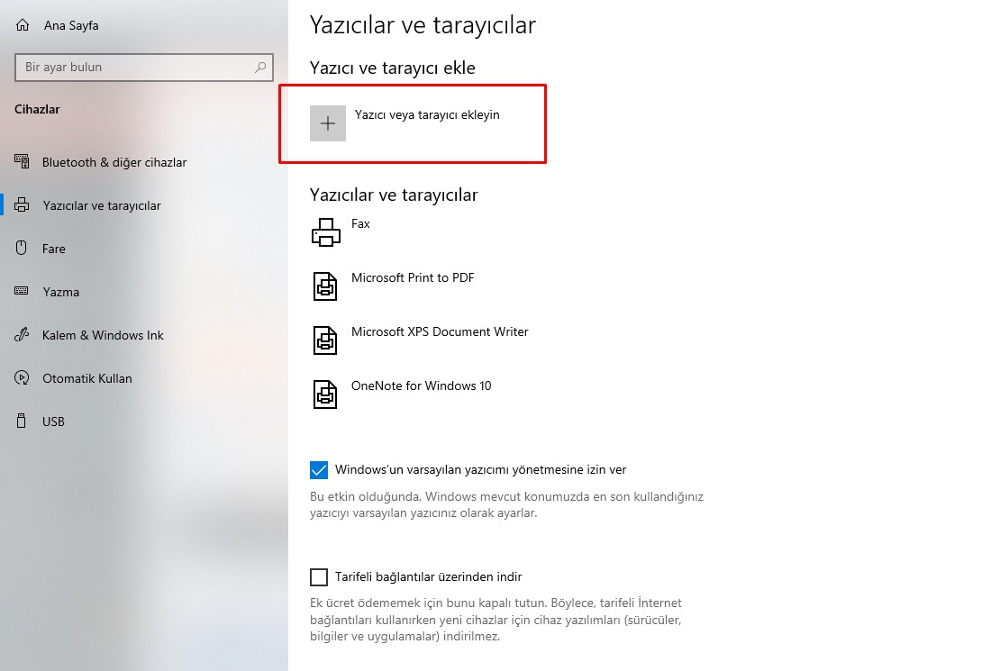
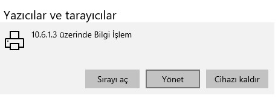
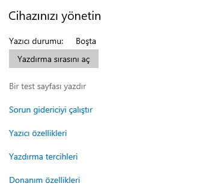

Eğer yazıcınızın toneri bitmişse, lekeli çıktı veriyorsa ya da çözemediğiniz bir problem olursa bis.lokmanhekim.edu.tr adresinden bilgi işleme destek talebinde bulunun.
Eğer talep oluşturmayı bilmiyorsanız buraya tıklayarak destek talebi oluşturma aşamalarına bakabilirsiniz.
Toner Orjinal Değil Hatası
1- Eğer toner orjinal değil hatası ile karşılaşıyorsanız yapmanız gereken işlem toner restlemektir bunuda alttaki resimde göründüğü gibi turuncu açma kapama tuşu ile ok tuşuna 5-6 saniye birlikte basılı tutuyoruz karşımıza emin misiniz ? diye bir bildiri ekranı gelirse tamam diyip geçiyoruz
2- Bilgisayara Yazıcı Nasıl Bağlanır
Bilgisayar ve yazıcı bilgisayar ağına bağlandıktan sonra, Windows 10’da “Ayarlar > Cihazlar> Yazıcılar ve Tarayıcılar seçeneğini açın.
Sağ tarafta “Yazıcı veya tarayıcı ekleyin” butonuna basarak yazıcı arama işlemini başlatın ve ağa bağlanan yazıcınızı bularak eşleştirme işlemini yapın.

Mutlaka emin olmak için yazıcıya bir test sayfası yollayın
Yazıcıya tıklayın Yönet > Bir test sayfası yazdır

